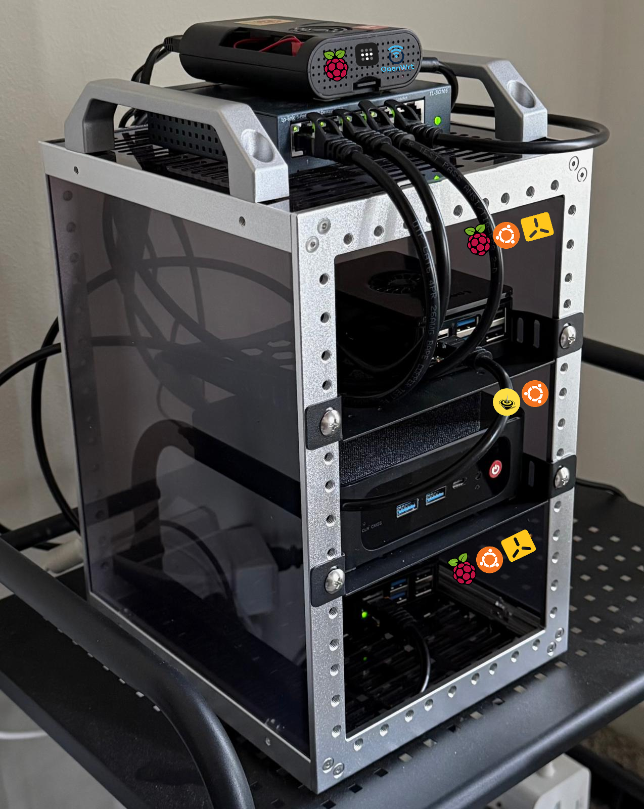

Home Lab

Hardware
- Raspberry Pi4 8GB
- TP-Link TL-SG105 Switch
- 2x Raspberry Pi5 8GB
- Beelink SER5 MAX Mini PC
- DeskPi RackMate TT Rackmount
Cost ~$850
Power ~40–55W
Networking
DIY router (Pi4 + Switch)
- Pi4 running OpenWRT - Firewall, DHCP, DNS
- Pi4 running Tailscale as a subnet router for remote access
- Switch connected to Pi4 for LAN
- WAN connected to home ISP router, USB A to ethernet adapter to convert Pi4 USB port to ethernet


Mini PC
- Runs self-hosted services and apps deployed as docker compose stacks
- doco-cd for GitOps, renovate for dependency updates
- SSO via Authentik


k3s Cluster
- Both Pi5s running k3s in a master worker setup
- falco for runtime monitoring
- argo-cd for GitOps
- Custom microservices in Istio service mesh